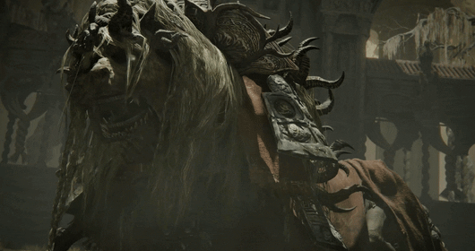

Dancing Lion is an optional boss in Elden Ring.
He resembles a dancing dragon. The most prominent "beast" we encounter is the Divine Beast Dancing Lion. It isn't a single creature, but a ceremonial suit inhabited by two powerful Hornsent warriors. By performing a synchronized, rhythmic dance, they act as a medium for the heavens.